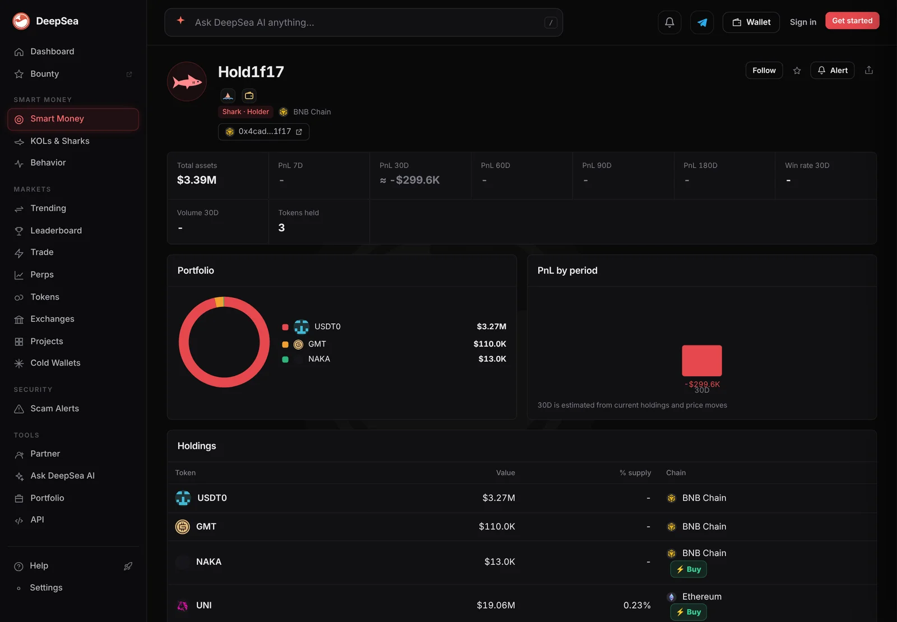

A shark lost $1.21 million on four chains in a week, then sold $1.36 million on Optimism
The wallet DeepSea calls Hold1f17 shows realized losses on all four chains it traded this week. In the last 24 hours it also made the largest sell-only move of any shark.
Key points
- The shark address ending in 1f17 lost $1,205,305 on closed trades in 7 days across BNB Chain, Ethereum, Optimism and Base, DeepSea's realized profit table showed at 6:33 a.m. ET on November 12, 2026. It won 14 of 76 trades.
- Six hours earlier the same four rows added up to minus $922,781. Almost all of the new loss, $279,652, came on BNB Chain.
- In the 24 hours to 6:38 a.m. ET, it sold $1,360,091 on Optimism in 2 trades and bought nothing there, the largest sell-only total of any shark in DeepSea's 24-hour view.
 What DeepSea's data shows
What DeepSea's data shows
DeepSea tags large, active traders as sharks and gives some an automatic name. It calls this address Hold1f17. Its realized profit table counts closed trades only, matched first in, first out, with one row per chain.
Built at 6:33 a.m. ET, the 7-day rows were: BNB Chain minus $702,732 (7 of 32 trades won), Ethereum minus $423,737 (3 of 33), Optimism minus $57,899 (1 of 4) and Base minus $20,938 (3 of 7). Over 30 days the four rows total minus $2,350,163 on 233 trades, 80 of them winners.
DeepSea's 24-hour flow view lists the address on Optimism with $0 bought and $1,360,091 sold in 2 trades. The view does not name the token for that wallet.

Data: DeepSea (desea.io), checked November 12, 2026, 6:38 a.m. ET.
Losing on every chain
New to the tools? Read what DeepSea is.
At 12:43 a.m. ET, LC Insight reported the address was in the red on four chains for about $922,780. By 6:33 a.m. ET its BNB Chain loss had grown from $423,080 to $702,732. The other three rows barely moved. Its record of 14 wins in 76 trades, about 18%, ranks fourth lowest of the 26 shark addresses with at least 20 closed trades this week.
Hold1f17, 7-day realized profit by chain
US$ thousand
Closed trades, 7 days to 6:33 a.m. ET, November 12, 2026. Source: DeepSea realized profit table.
The Optimism sale
Two trades worth $1.36 million average about $680,000 each. Among sharks that only sold in the last 24 hours, the next biggest was about $125,000. The sale has not yet shown up as a closed result in the 7-day Optimism row, which still reads minus $57,899 on 4 trades.
Sharks were net sellers of OP, Optimism's own token, in the same window: $4.61 million sold against $2.39 million bought. DeepSea does not tie the 1f17 sale to a specific token, so we cannot say it was OP. At 7:00 a.m. ET CoinGecko showed OP at $0.0949, down 5.4% in 24 hours and 14.6% in 7 days.

Market backdrop and limits
This analysis uses data from DeepSea and CoinGecko. Ether was at $2,020.24 on CoinGecko at 7:00 a.m. ET, down 16.4% in 7 days. Who controls the 1f17 address is unknown. Realized profit ignores tokens still held, so the wallet's full result may be better or worse.
LC Insight analysis
This section is our reading of the facts above, not a statement of fact.
- We think the spread of the losses is the point: the address shows realized losses on every chain it trades this week, and its latest move was a sale with no buy.
- The BNB Chain loss grew by almost $280,000 in six hours, so the 7-day figure can change fast for this wallet.
- Without the token name, the Optimism sale is a size signal only. It should not be read as a vote on OP.
What's next
- Whether the $1.36 million Optimism sale turns into a closed loss or profit in DeepSea's table
- Whether the BNB Chain loss keeps growing
- Where the sale proceeds move next
Disclaimer. This article is based on public information and the sources listed below as of the update time shown. It is for information only and is not investment, legal or tax advice. Figures may change as companies and authorities publish new data.
Sources
- DeepSea, realized profit table, 7 and 30 days (built 6:33 a.m. ET, read November 12, 2026, 6:38 a.m. ET)
- DeepSea, live flows by token and wallet, 24 hours (built 6:38 a.m. ET, November 12, 2026)
- DeepSea, wallet page for the address ending in 1f17
- CoinGecko, Optimism (OP) price (read November 12, 2026, 7:00 a.m. ET)
- CoinGecko, Ethereum (ETH) price (read November 12, 2026, 7:00 a.m. ET)